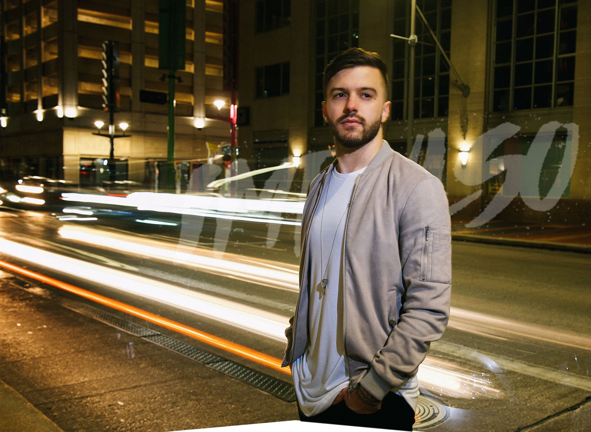

TRAYECTORIA
Evan Craft, joven estadounidense nativo del sur de California, cantante, compositor, músico y empresario, con un corazón cautivado por las misiones y el evangelismo. Aprendió español en España, México y Costa Rica debido a la pasión que Dios encendió en su corazón por evangelizar en latinoamérica. Su padre que hoy en día dirige un importante refugio en California sembró desde niño en su la pasión por dos cosas, servir a los demás y la música. A sus 12 años le regaló una guitarra, la que daría inicio a esta aventura musical. A lo largo de su vida Evan Craft ha compuesto diferentes discos iniciando con Spotlight el cual fue su primer disco "aficionado". Luego llegó su primer álbum profesional en Inglés titulado GIANTS.
Con los años llegó Yo Soy Segundo", que lo llevó a puestos de privilegio en las listas de los Billboard en el 2012, siendo el álbum cristiano latino #1 en EUA, #10 a nivel en categoría pop y #30 a nivel general, lo que hizo despegar su carrera profesional. En 2015 compuso su album Principio y Fin, compartiendo canciones con Danilo Montero, Ingrid Rosario, Seth Condrey entre otros. Para el 2017 Evan Craft consolida su buen momento lanzando su más reciente producción titulada "Impulso" donde canta con artistas reconocidos como Marcos Witt, Alex Campos, Marcela Gandara, Funky, Redimi2 entre otros. Durante los últimos 3 años Evan Craft ha tenido más de 200 conciertos a lo largo de todo el mundo en iglesias y lugares icónicos a nivel tales como Teatro Gran Rex en Argentina, Palacio de los Deportes de México, Bogotá Gospel en Colombia, Estadio de El Salvador a entre muchos otros. Actualmente sus redes sociales tienen mas de 1.5 millones de seguidores y en Youtube posee más de 300.000.000 de reproducciones.